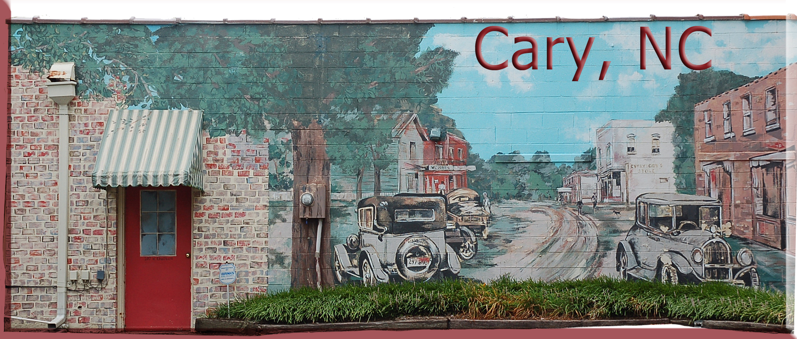

Town of Cary
North Carolina
At the Town of Cary we focus every day on enriching the lives of our citizens by creating an exceptional environment and providing exemplary services that enable our community to thrive and prosper.

New to Cary
Town of Cary Services Include:
- Police and Fire Protection
- Garbage Collection
- Water and Sewer Service
- Planning
- Inspections
Cary has numerous parks, greenway trails, and programs for athletics and cultural arts. The Citizen's Guide to Services provides an A-Z listing of Town of Cary services. It also includes an alphabetical directory of most requested telephone numbers for schools, other government agencies and community organizations.
Emergencies
Dial 911 for emergency police, fire or ambulance calls and (919) 469-4012 for situations not involving imminent threats to people or loss of property.
Water and Sewer Service
Call the Finance Department at (919) 469-4050 to set up water, sewer, solid waste and recycling service.
Solid Waste Collection
The Customer Service Representative who signs you up for water and sewer service will do the same for solid waste collection. The Town collects household garbage, yard trimmings, and recyclable materials. Find out your collection day and recycling week by using our online mapping tool, and review what is accepted as part of your curbside trash and recycling services.
Pets All dogs and cats at least 4 months old must wear Town of Cary identification tags to help reunite lost pets with their owners. Call the Parks, Recreation and Cultural Resources Department at (919) 469-4061 for more information or complete an application form. For more important information regarding pets, including rabies and the leash law, contact Animal Control at (919) 319-4517.
County Services
Cary residents have addresses in Wake County and in Chatham County, and are served by the county in which they reside. Responsibilities of county government include the sheriff's department, health and social services, the landfill and library system in addition to funding for schools. Cary students attend Wake County Public Schools or Chatham County Schools based on their address.
Voter Registration
To register to vote, pick up a registration form at the Town Clerk's office on Town Hall campus, any driver's license office or your local public library. Forms go to the Wake County Board of Elections office in downtown Raleigh for Wake County residents; in Chatham County, forms go to the Chatham County Board of Elections in Pittsboro.
Cary citizens elect a mayor and six Town Council members, four of whom represent districts. The chief administrator is the town manager, whom the council appoints.
Driver's Licenses and Vehicle Tags
See NC Division of Motor Vehicles requirements for those who have moved here from elsewhere in North Carolina or from out of state.
Electricity and Gas
- Duke Progress Energy, (919) 508-5400 or (800) 452-2777
- PSNC Energy, (877) 776-2427